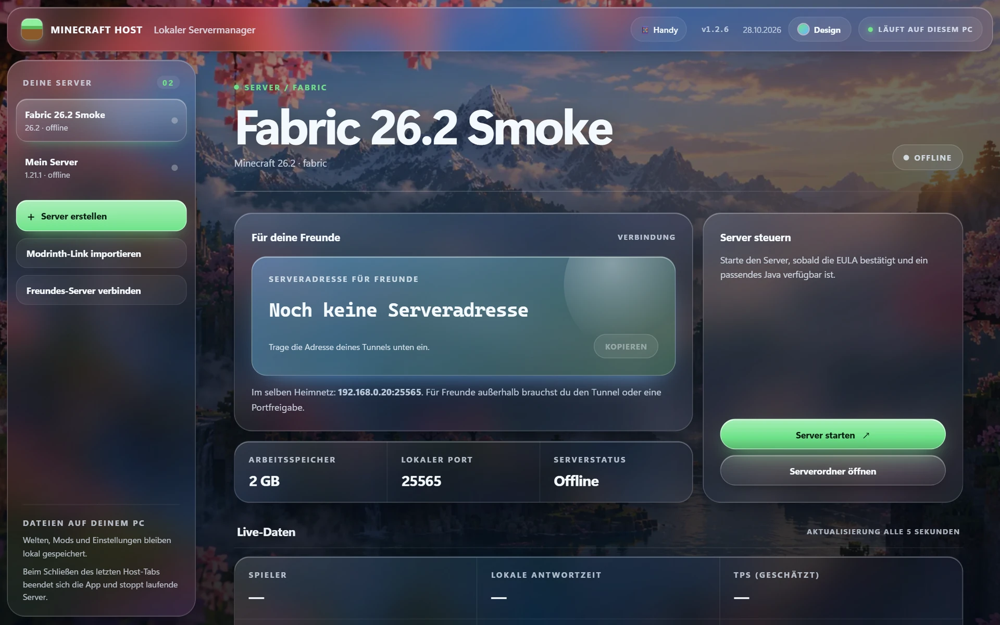

📦
Modrinth-Link einfügen, Version wählen
Servergeeignete Dateien werden per HTTPS geladen und per SHA1/SHA512 geprüft, overrides und server-overrides übernommen. Alternativ .mrpack oder ein fertiges Serverpack als ZIP.

Modpack rein, Start drücken, Freunde einladen. Minecraft Host importiert Modrinth-Packs, findet das passende Java und zeigt dir die Adresse für deine Freunde – ohne Routerfreigabe.

Die Oberfläche läuft im Browser unter 127.0.0.1, der Server auf deinem PC. Keine Cloud, keine Abos.
Servergeeignete Dateien werden per HTTPS geladen und per SHA1/SHA512 geprüft, overrides und server-overrides übernommen. Alternativ .mrpack oder ein fertiges Serverpack als ZIP.
Java 8/17/21/25 – auch die Laufzeiten der Modrinth-App – werden erkannt. 1.21.x braucht 21, 26.x braucht 25.
Kein SuchenSpieler, lokale Antwortzeit, echte RAM-Nutzung, Laufzeit und ab 1.20.3 Tickzeit samt geschätzten TPS.
Alle 5 slist, say Hallo oder whitelist add Name direkt aus der App, die letzten 180 Zeilen im Blick.
Fabric und Vanilla direkt; Forge und NeoForge über den offiziellen Installer mit exakter Loader-Version.
EinrichtenEmpfohlen und kostenlos. Die App zeigt deine VPN-Adresse und prüft die Windows-Firewall.
Die LAN-Adresse steht automatisch in der Übersicht.
Signierter Agent im Paket, Start aus der App, Minecraft-Java-Tunnel auf deinen Port.
Optional für Fabric: Gate-Proxy und Adresse werden kostenlos eingerichtet.

Oben rechts in der App umschalten. Die Wahl bleibt auf diesem PC gespeichert, der Wechsel blendet weich über.
Portable ZIP mit MinecraftHost.exe sowie playit-Agent, Gate und Syncthing. Kein Python nötig. Für den Minecraft-Server brauchst du ein passendes Java.
Python 3.11+, nur Standardbibliothek.
python app.py pyinstaller MinecraftHost.spec
online-mode=true. Lies und bestätige die Minecraft-EULA vor dem ersten Start.